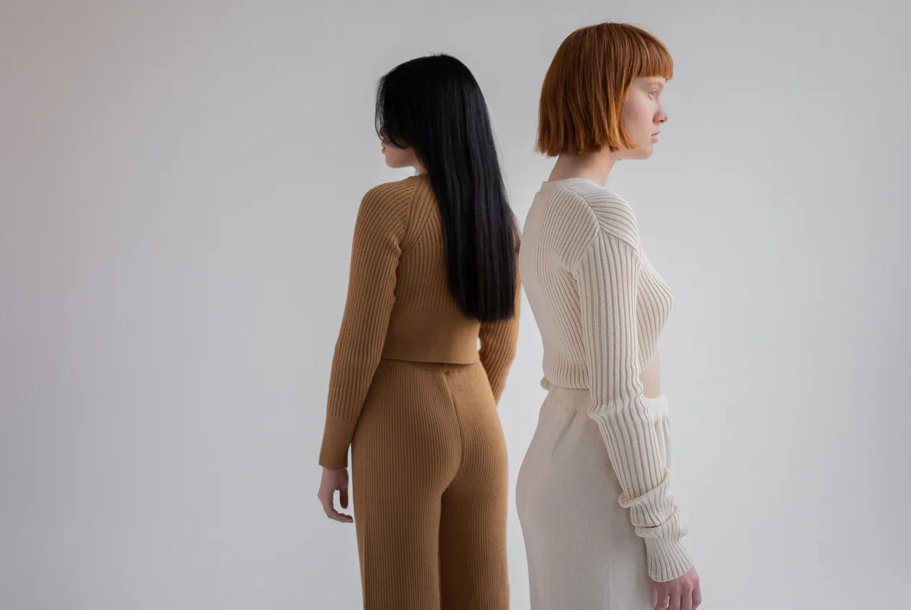

JUST IN
JUST INThe Sunday Coat
Warm sand cotton · 3 colors
A wardrobe in quiet conversation
Clothing with room to breathe. Thoughtfully made, beautifully lived in.
Explore the collection 01 04
The edit, in chapters
Just found its way here
A note on getting dressed
We believe the best things don’t ask for attention. They earn affection, one ordinary Tuesday at a time. Made in small runs, meant to stay.
A little about usA study in stillness
Our latest chapter follows the light to its quietest places. Clothes for the long way round.
Enter the lookbook STORIES IN MOVEMENT
The art of taking your time
For slow mornings, unplanned detours, and the small rituals that make a day your own.
Read our journalNotes from our world

PEOPLE & PLACES · 6 MIN READ
On making a little space for the things that matter.
Read the story ↗
THE ATELIER · 4 MIN READ
A few thoughts on finding the perfect proportion.
Read the story ↗A SMALL REMINDER
“Style is knowing who you are, what you want to say, and not giving a damn.”— GORE VIDALMore from the journal ↗